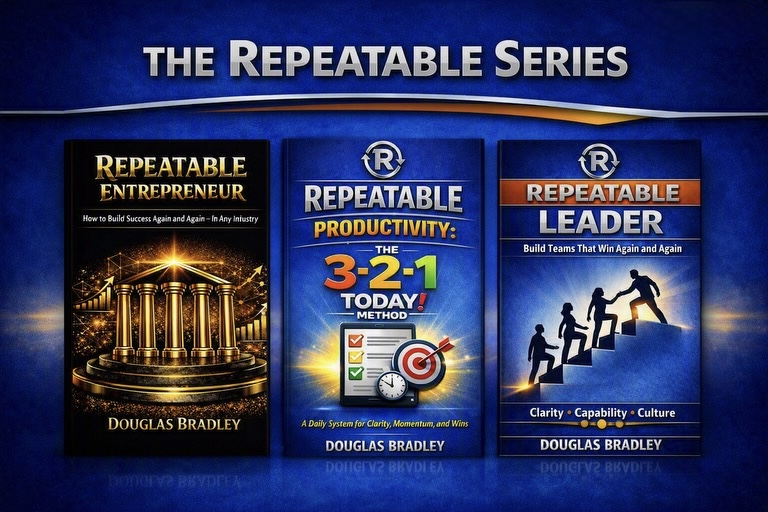
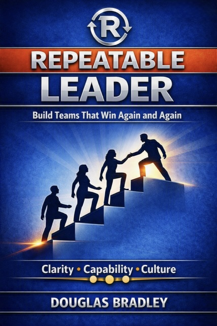
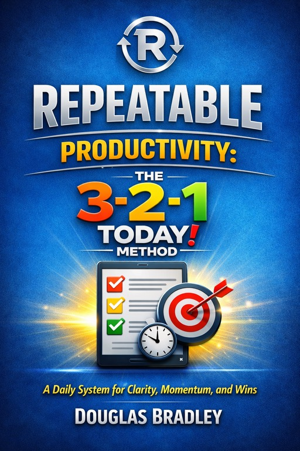

Douglas Bradley
Creator of the Repeatable Series: Repeatable Entrepreneur, Repeatable Productivity, and Repeatable Leader
Lessons on building businesses, teams, and personal operating systems that produce clear, repeatable results across industries.
Creator of the Repeatable Series: Repeatable Entrepreneur, Repeatable Productivity, and Repeatable Leader
Lessons on building businesses, teams, and personal operating systems that produce clear, repeatable results across industries.

The Repeatable Series was built for one goal: to give entrepreneurs, operators, and leaders systems they can use again and again to win in any environment. Each book focuses on a different part of the success cycle — building a business, executing with daily clarity, and leading people with consistency — but all three share the same philosophy: when your approach becomes repeatable, your results become predictable.
Together, the series forms a complete operating framework for anyone who wants to grow, execute, and lead with confidence, structure, and momentum.

Repeatable Leader defines a new kind of leadership—one built on systems, not slogans. It’s for leaders who want clarity, capability, and culture that scale. Instead of relying on charisma or improvisation, Repeatable Leaders operate through rhythms and frameworks that make success teachable, transferable, and durable.
This book reveals how to lead through structure—how to install a leadership operating system that produces consistent results across teams, industries, and conditions. It’s not about being the hero; it’s about building leaders who lead the same way you do.

A practical daily system for creating clarity, momentum, and meaningful progress.
The 3-2-1 TODAY! Method helps individuals focus on what matters most, eliminate overwhelm, and build consistent forward motion through a simple repeatable framework.
Whether you're leading a business, managing a team, or pursuing personal goals, this book provides a daily operating system for getting the right things done.
Buy on Amazon
The Repeatable Entrepreneur reveals a proven system for creating meaningful change whether you're launching a new venture or transforming one from within.
Drawing from real-world experience building software companies, hospitality brands, and investment businesses, Douglas Bradley demonstrates how repeatable frameworks turn ideas into scalable results.
Learn how to create systems that build clarity, ownership, momentum, and long-term growth—whether you're an entrepreneur, leader, or innovator inside an existing organization.
Buy on Amazon
The true story of buying, remodeling, rebranding, and ultimately selling four sports bars in the highly competitive Dallas hospitality market.
Through strategic planning, operational discipline, and a relentless focus on guest experience, Douglas and Rachel Bradley transformed multiple independent locations into the successful End Zone Bar & Grill brand.
Includes downloadable spreadsheets, menus, recipes, operational forms, and real-world tools used to build and operate the business.
Buy on AmazonDouglas Bradley is a Repeatable Entrepreneur whose career spans software, hospitality, consulting, and real estate — four industries, four different business models, and one unifying operating system.
He began his entrepreneurial journey in 1997 when he founded Dynatron Software, a business-intelligence company that grew from a two-person startup into a nationwide SaaS provider serving thousands of automotive dealerships. Over nineteen years, he designed the company's product architecture, built its distributor network, and led it through multiple pivots before selling the business in 2016.
After exiting software, Bradley shifted into hospitality, acquiring and transforming four underperforming bar and grill locations into the End Zone Bar & Grill brand. Operating the restaurants remotely from Florida, he built centralized systems for leadership, financial oversight, and operations.
During the same period, he launched DBRB Homes, a real-estate investment division focused on acquiring and rehabilitating rental properties. Across every venture, his approach remained consistent: clarity over chaos, systems over improvisation, judgment over emotion, and repeatability over one-time wins.